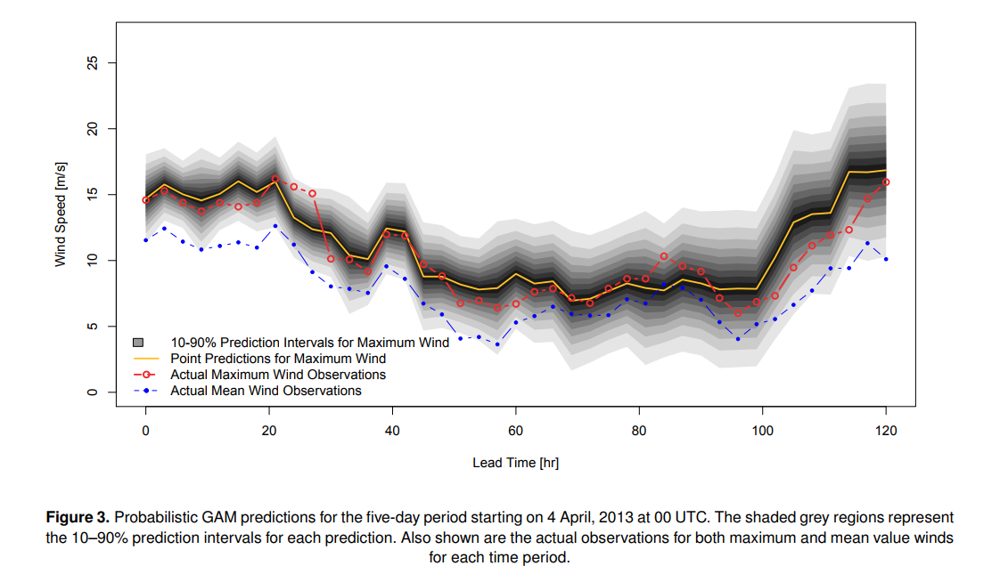

Tom Logan
Email
Watercolor (aka Visually Weighted) regressions in Python
I first saw a watercolor regression in a paper by my colleague Andrea Staid on wind prediction for wind energy. She had this neat figure here which shows a probabilistic prediction band:
I want something similar to this for a research project and came across the work of Schönbrodt and Hsiang.
Seriously, how cool is that.
Basically, the figure on the left shows the scatter and the 1st, 2nd, and 3rd standard deviation away from the median. The figure on the right shows this with some smoothing.
But! Their code is in R and Matlab respectively and I want it in Python. A quick Google didn't turn anything up (except this Stack question).
I'm going to start off easy and not run any regression. I just want a line which goes through the median value and has bands at the 25th and 75th percentile, the 10th and 90th, and the 5th and 95th. A couple of options from my attempts below. Option 1 (Top left) uses the color pallete from Schönbrodt's figures. It has three distinct, albeit similar colors. The second option uses different transparencies of the same color. The final option reverts the scatter points to their default style provided through the style context option - using this approach will ensure consistency between figures.
If this is of use to anyone, the code is on my github